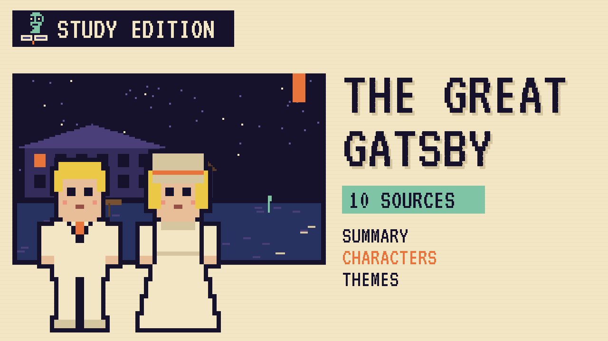

Jay Gatsby throws huge parties to win back Daisy Buchanan. This guide covers the novel and a version where he simply knocks on a door and asks her to tea.
Nick Carraway moves to West Egg, on Long Island, and rents a small house next to the mansion of the mysterious Jay Gatsby. Across the bay lives Nick's cousin Daisy and her husband, Tom Buchanan.
Gatsby throws giant parties every weekend. Nick learns that Gatsby and Daisy loved each other five years earlier, before the war, and that everything Gatsby owns is meant to win her back. Nick arranges for them to meet again over tea.
Gatsby wants to repeat the past exactly. The summer ends in a car accident, a death, and a funeral almost nobody attends. Nick goes home to the Midwest, thinking about the green light at the end of Daisy's dock.
"Whenever you feel like criticizing any one, just remember that all the people in this world haven't had the advantages that you've had."The Great Gatsby, 1925, chapter 1
In plain words: Nick's father's advice to be slow to judge.
"Can't repeat the past? Why of course you can!"The Great Gatsby, 1925, chapter 6
In plain words: Gatsby refuses to accept that time moves on.
"So we beat on, boats against the current, borne back ceaselessly into the past."The Great Gatsby, 1925, chapter 9
In plain words: We keep pushing forward while the past pulls us back.
| Word | Meaning |
|---|---|
| bond | a kind of loan sold to investors |
| Jazz Age | the 1920s in America, named after its music |
| ceaselessly | without ever stopping |
| flannel | a soft woven fabric |
In an alternative scenario, what if Gatsby asks Nick to arrange the tea in June, in person, with no parties first?
In the book, Gatsby throws huge parties for years, hoping Daisy will wander in. The reunion happens, but the summer ends with a car accident, a killing, and Gatsby shot in his pool. Almost no one comes to his funeral.
Why the author chose it: Fitzgerald shows that Gatsby's dream of repeating the past could never come true, however much money he had.
| # | Source | Type | Why it's useful |
|---|---|---|---|
| 1 | Princeton "Gatsby 100" digital exhibit | DIGITAL TOUR | An online exhibition of Princeton's Fitzgerald collections. |
| 2 | The handwritten Gatsby manuscript and galleys | MANUSCRIPT | Fitzgerald's draft, with his own crossings-out, now online. |
| 3 | F. Scott Fitzgerald Papers, finding aid | ARCHIVE | The full list of his letters, drafts and scrapbooks. |
| 4 | Museum of the City of New York collections | MUSEUM | Photos of 1920s New York streets, parties and cars. |
| 5 | Library of Congress Prints and Photographs | PRIMARY SOURCE | Search "1922 Long Island" for real images of the era. |
| 6 | Chronicling America newspapers | NEWSPAPERS | Read real newspapers from summer 1922. |
| 7 | Oheka Castle, Long Island | HISTORIC SITE | A Gold Coast mansion of the kind Gatsby would have owned. |
| 8 | F. Scott Fitzgerald Society | ARCHIVE | Scholars' resources and news. |
| 9 | Standard Ebooks edition | FREE TEXT | A beautifully formatted free edition. |
| 10 | The Great Gatsby (free text) | FREE TEXT | The complete novel, public domain in the US since 2021. |